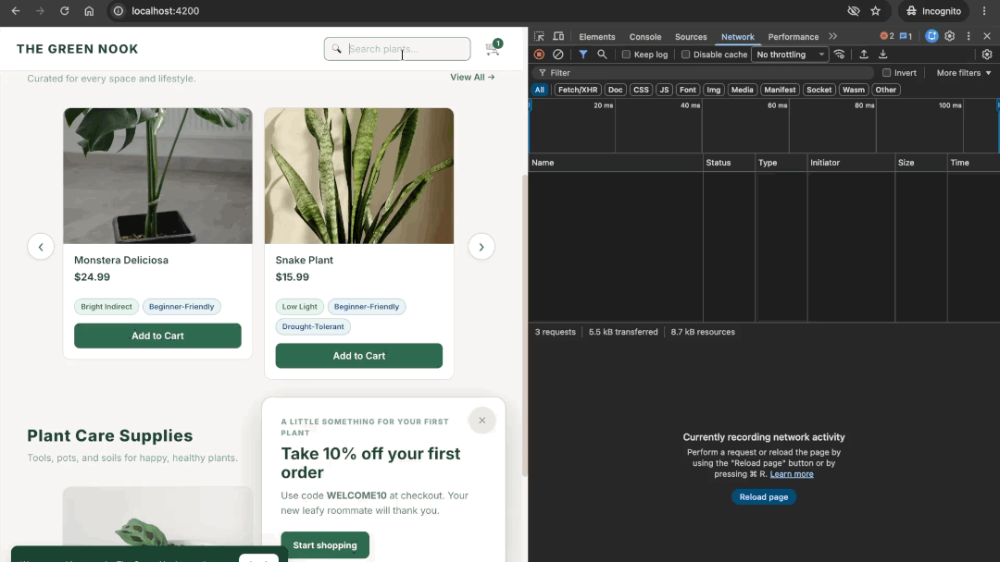

Release-Day Priorities
These tickets come from several release day stakeholders — some brief, some deeply technical. Part of your job is to weigh what's said, what's missing, and what the reporter's perspective is telling you. Filter by bug type or reporter, and follow the solution link once your team has attempted a fix.
Stuck? Each bug includes optional hints you can reveal one at a time. Start with a small nudge and ask for more when you need it.
Goal 1: Triage with your team
- Reproduce and assess impact. Who encounters this bug, and how often? Does it affect a common customer journey or an edge case? What can’t the customer do?
- Weigh severity and options. How critical is the affected feature? Is there a workaround? What would the company or its customers lose if you temporarily disabled it? Adjust the starting effort estimate if needed.
- Agree on priority and choose a bug. Assign P1, P2, or P3 and explain why. Which bug should your team tackle first, given its impact and the time available?
Priority × Effort — the quick-triage matrix
Your bug reporters have provided initial effort estimates. Feel free to adjust them based on your team’s experience and what you discover, but assigning priority to the bugs should be your main focus. Drag a bug from Needs triage into the matrix, or edit its values in the Bug Directory.Set priority and effort in the Bug Directory. The matrix updates automatically.
| Low Effort | Medium Effort | High Effort | |
|---|---|---|---|
| P1 (High) |
Low effort
Quick Win — do first
|
Medium effort
Do now; assign your best debugger
|
High effort
Ship a workaround, schedule the real fix
|
| P2 (Medium) |
Low effort
Slot in this sprint
|
Medium effort
Next sprint
|
High effort
Ship a workaround now; split the real fix across sprints
|
| P3 (Low) |
Low effort
Batch with the next release
|
Medium effort
Backlog
|
High effort
Assign an owner and revisit later
|
Needs triage
Set missing values in the Bug Directory below to place these bugs in the matrix.
Bug Directory
Set priority and effort below, or drag bugs into the triage matrix above; the matrix updates automatically.
Goal 2: Solve bugs together
Reproduce your chosen bug, investigate its cause, make a fix or workaround, and verify it. Be ready to explain your reasoning.
Bug Reports
Welcome offer is overlapped on mobile
On mobile, the cookie notice partially overlaps the welcome offer and its buttons, making the layout look crowded and unfinished. The desktop layout looks fine. On smaller screens, these elements should have clear spacing and fit together cleanly, with the close button and “Start shopping” action fully visible and easy to tap.
- Open the home page at a phone-sized viewport (or on a mobile device).
- Refresh the page so the welcome offer and cookie notice appear together.
- Notice how the cookie notice overlaps the welcome offer, including parts of its buttons, disrupting the spacing and visual hierarchy.
- Check whether the whole welcome offer is clearly visible and visually separated from the cookie notice.
Need a hint?
Reveal one hint at a time. Stop whenever you have enough to try your next step.
Hint 1 of 3 · Where to look
On the home page, open DevTools and enable the device toolbar (phone/tablet icon). Choose a narrow phone viewport and refresh with the welcome offer and cookie notice visible. Compare with a desktop width and try both panels’ buttons. At what screen size do the panels start competing for space?
Hint 2 of 3 · What to investigate
In DevTools → Elements, use the element picker to inspect each panel. In Styles, compare their positioning rules and bottom offsets; check their rendered heights too. Edit values directly in DevTools before changing the codebase, and try a width where the notice text wraps. Which positioning change makes both panels’ buttons accessible?
Hint 3 of 3 · Another clue
Find the mobile rule for .offer-popover in welcome-offer.component.scss. Move your successful DevTools experiment into the stylesheet, then reload because DevTools edits are temporary. Check narrow widths, enlarged text, and dismissing either panel first. How much bottom clearance does the offer need to stay above the cookie notice?
"Charged twice for the same order?"
Before you startIf you’re using Mock API in StackBlitz, skip this exercise because it requires DevTools throttling. Continue with the next exercise. You can try this later using Live Supabase or running the project locally.
Getting a wave of complaints from customers saying they placed a single order but were charged twice. A couple of them mentioned they "clicked the button twice because nothing happened the first time." The My Orders tab shows duplicate orders when they search using their email. Passing it to engineering to look at.
Need a hint?
Using Mock API? Skip this bug.
Reveal one hint at a time. Stop whenever you have enough to try your next step.
Hint 1 of 3 · Where to look
On checkout, use a different test email for each attempt so earlier orders do not confuse the result. Compare one deliberate click on Place Order with two quick clicks. In My Orders, search each email and compare the new orders’ items and totals. How many orders appeared after one click versus two quick clicks?
Hint 2 of 3 · What to investigate
Open DevTools → Network, enable Preserve log, filter to Fetch/XHR, and select a slow throttling preset. Chrome DevTools throttling guide ↗ Repeat the rapid clicks and compare the order POST requests’ Payload tabs. In Elements, inspect the button while the first request is pending. Can another submission start before the first request finishes?
Hint 3 of 3 · Another clue
Find the submit handler and submitting state in checkout.component.ts, and the Place Order button in checkout.component.html. After making a change, verify one order for rapid clicks and that a failed request allows a retry; you can submit while Network is Offline, restore the connection, and retry. Restore normal throttling afterward. How could submitting both disable the button and guard the handler, while always allowing another attempt after failure?
Checkout error message is unhelpful — hurting conversion
When a shopper submits checkout with a missing required field, they get one generic "Please fill in all fields" message with no indication of which field is the problem. Session replays show people re-checking every input in frustration; funnel data shows abandonment spikes at this step. Fixing this should be a straightforward conversion win.
- Each missing required field is called out inline, with a message that names the field and what's expected.
- Valid fields don't get flagged as errors.
- Successful submissions behave exactly as they do today.
Need a hint?
Reveal one hint at a time. Stop whenever you have enough to try your next step.
Hint 1 of 3 · Where to look
On checkout, use a valid US address to avoid the separate international postal-code issue. Clear one required field and submit, then repeat with a different field. Leave two fields empty and correct only one. What does the feedback tell you about which fields still need attention?
Hint 2 of 3 · What to investigate
Open DevTools → Network, filter to Fetch/XHR, and repeat an incomplete submission to see whether an order request is sent. In Elements, inspect the empty input and the error message. Search the project for the exact displayed error text. Where is the message chosen, and does that code keep track of which fields failed?
Hint 3 of 3 · Another clue
In checkout.component.ts, inspect the required-field checks; in checkout.component.html, find where the error is rendered. After your change, verify that correcting a field clears its error on revalidation and that valid checkout still works. Keep optional-region rules consistent with the State/Province report. How could you collect errors by field, display each beside its input, and associate the message with that input for accessibility?
International customers can't check out
Sales flagged this — orders from non-US customers aren't going through. Canada, UK, and Japan all seeing it. Would like a triage plan by end of day: whether this is a same-day fix or something that needs a temporary workaround while a proper fix ships.
A Canadian customer reported that the following address wasn't accepted:
- Street address
- 100 Queen's Park
- City
- Toronto
- Province
- ON
- Postal code
- M5S 2C6
- Country
- Canada
Need a hint?
Reveal one hint at a time. Stop whenever you have enough to try your next step.
Hint 1 of 3 · Where to look
On checkout, complete the Canadian example from the report and note the exact error. Compare the country selection, postal-code label, and message. Try a valid and an invalid format for both Canada and the US, keeping other required fields filled. Which inputs are rejected, and does the message describe the country you selected?
Hint 2 of 3 · What to investigate
In DevTools → Network, filter to Fetch/XHR and repeat the Canadian submission. If an order POST appears, inspect its Payload and Response; if none appears, investigate the form’s validation. Search for the exact postal-code error text and inspect the condition that produces it. Does that check use the selected country?
Hint 3 of 3 · Another clue
In checkout.component.ts, set a Sources breakpoint at postal-code validation and inspect form.country, form.zip, and the pattern being tested. Retest valid and invalid formats after your change, distinguishing region errors from postal-code errors. How could the selected country determine both the validation rule and the format example shown when validation fails?
State/Province selection carries over when the country changes
A shopper changes the selected country in the checkout form, but a previously chosen state or province value silently carries over, so the form submits with a state that doesn't belong to the new country.
- Add any item to the cart and navigate to the checkout page.
- Select United States as the country and pick a state (e.g., California).
- Change the country to a different one (e.g., Germany or United Kingdom).
- Fill in the remaining fields and submit the form or inspect the form data.
- Observe that the state field still holds the previously chosen value ("CA") even though it makes no sense for the new country.
- Reload the page and pick a country only once before submitting.
- Observe that the state value corresponds correctly to the selected country.
- Changing the country clears any previously selected state/province value.
- The state field re-renders correctly (select vs. free-text input) based on the new country's regions.
- When State/Province is required for the selected country, the required-field check catches the empty value after a country change instead of allowing a stale value to slip through. Otherwise, the field is optional or hidden and an empty value does not block submission.
- No regressions to the initial country selection flow.
Need a hint?
Reveal one hint at a time. Stop whenever you have enough to try your next step.
Hint 1 of 3 · Where to look
On checkout, select a US state, then switch to Canada. Repeat with France and compare with choosing a country once after a refresh. Note whether State/Province is a dropdown or text input and whether the old choice remains visible. Does a change in the displayed control tell you whether the previous value was cleared?
Hint 2 of 3 · What to investigate
In DevTools → Elements, inspect the region options, label, and required attribute. Compare an empty region with a selected region for Canada, then try an empty region for France. Note which validation check blocks submission—the separate postal-code bug can also reject an address. Do the displayed choices, stored value, and required-field behavior agree?
Hint 3 of 3 · Another clue
Find onCountryChange in checkout.component.ts and pause there with a Sources breakpoint. Step through while watching form.state, then inspect the region validation and its template’s required binding. Verify the form value even if the postal-code bug still blocks submission. How could changing countries clear the old region and apply a consistent rule for when a new region is required?
"The Add to Cart button is broken on some plants"
Customers keep messaging in convinced the "Add to Cart" button is broken on certain products — they click it and nothing happens. Those cards are faded and have an "Out of Stock" badge in the top-right corner, but shoppers seem to miss it and the button still says "Add to Cart." Can we make the availability clearer? People shouldn't have to contact us to figure out that a plant is out of stock.
Need a hint?
Reveal one hint at a time. Stop whenever you have enough to try your next step.
Hint 1 of 2 · Where to look
On the plant listing, right-click Add to Cart for an available product and a sold-out product and choose Inspect. In DevTools → Elements, compare the disabled attribute, visible text, and accessible name. What tells the browser that one button is unavailable, and what tells the shopper why?
Hint 2 of 2 · Another clue
Inspect the stock binding and button text in product-card.component.html. Try disabled-button styling in DevTools → Styles before updating product-card.component.scss. Verify that available products still add to the cart and sold-out products stay unavailable. How could the button’s label, accessible name, and styling explain its stock status at the point where the shopper tries to act?
One of the product cards has a missing image
One of the product cards on the plant listing is showing a broken image — the rest of the card looks fine but there's no photo. Looks bad for something a shopper sees first. Low priority relative to the checkout issues, but let's not ship the release with a broken image visible on the homepage.
Need a hint?
Reveal one hint at a time. Stop whenever you have enough to try your next step.
Hint 1 of 2 · Where to look
On the plant listing, open DevTools → Network, select the Img filter, and reload. Select the failed image request and find its Request URL in Headers. Compare that URL with a working image request. What differs between the addresses the browser is trying to load?
Hint 2 of 2 · Another clue
Search product-images.ts for the failed URL and compare its hostname with the working image URLs. Try correcting it, then reload to check the photo. For future failures, inspect the image element in product-card.component.html and the existing placeholder returned by resolveProductImage(null). How could you correct this image’s address and show a placeholder if another image fails, without repeatedly retrying a failed placeholder?
Clear Cart dialog locks the page
After dismissing the Clear Cart dialog, customers are unable to click anything on the site and are forced to refresh the page to continue shopping.
- Add an item to the cart to open the cart modal.
- Click Clear Cart to open the confirmation prompt.
- Click Keep Items or Clear Cart to close the prompt.
- If you try to click any product or navigation link on the page, it has no effect.
- Confirming "Clear Cart" successfully empties all items from the cart.
- Closing or confirming the dialog leaves the page fully clickable so customers can keep browsing without refreshing.
Need a hint?
Reveal one hint at a time. Stop whenever you have enough to try your next step.
Hint 1 of 3 · Where to look
Reproduce the issue by opening Clear Cart and choosing Keep Items. Leave the page in its unresponsive state. Open DevTools → Elements and use the element picker over a button or link that no longer responds. What element does it select?
Hint 2 of 3 · What to investigate
In Elements, inspect the selected element and its surrounding DOM. Use the page highlight to see how much space it covers, and check its position and dimensions in Styles or Computed. Did DevTools select the button or link you were trying to click? If not, what did it select?
Hint 3 of 3 · Another clue
If you find an element covering the page, temporarily add display: none in Styles and try clicking again. Search confirmation-dialog.component.ts for where that element is created or attached, then compare opening and closing the dialog. Reload to undo the temporary CSS change, and test cancellation, confirmation, and backdrop dismissal. What should happen to that extra element when the dialog component is destroyed?
Same promo code can be applied multiple times
A shopper can apply the same promo code repeatedly and receive the discount more than once, driving the cart total down with each duplicate code. It can even push the total below zero.
- Add at least one product to the cart and navigate to the cart page (
/cart). - Enter a valid promo code (for example
GHC2026orWELCOME10) and click Apply. - The coupon appears in the applied list and the discount is reflected in the total.
- Without reloading, enter the same promo code again and click Apply.
- Now, the same coupon is listed again (and the discount total increases).
- The same promo code cannot be applied more than once per cart session.
- A second attempt shows clear feedback (e.g., "This promo code is already applied.").
discountTotalreflects each distinct coupon at most once.discountTotalshould never exceed the subtotal.
Need a hint?
Reveal one hint at a time. Stop whenever you have enough to try your next step.
Hint 1 of 3 · Where to look
Open DevTools → Application → Local Storage and select the app’s origin. Inspect cart_coupons before and after applying the same code twice; refresh the storage view if needed. Reload and compare the saved entries with the applied-coupon list. How many entries represent the same coupon, and do they survive a reload?
Hint 2 of 3 · What to investigate
Find applyCoupon in cart.service.ts and follow the checks before it updates the applied-coupon collection. Compare the coupon returned by the lookup with the entries already in that collection. What is checked before adding a coupon, and is an already-applied code treated differently from a new one?
Hint 3 of 3 · Another clue
In applyCoupon, consider returning useful feedback before modifying the collection when the code is already present. Verify valid, invalid, and repeated codes, including capitalization and surrounding spaces; reload to check persistence and confirm discounts cannot exceed the subtotal. How could you recognize equivalent codes before saving another entry and keep the total from falling below zero?
Cart and checkout totals ignore the sale price
A shopper adds an item marked "On Sale" to their cart. The line-item price in the cart matches the sale price shown on the product card, but the cart Subtotal and Total — and the checkout Order Summary and Place Order button — are calculated from the higher crossed-out price instead of the sale price.
- Start with an empty cart and no applied promo codes. Remove items individually if Clear Cart is still broken.
- In the header, click Sale (or on the shop page, sort by On Sale) and pick any product showing a "Sale" badge with a strikethrough original price.
- Click Add to Cart. The cart modal opens automatically.
- In the modal, compare the line-item price against the modal's Total. The total is higher than the line-item price times quantity.
- Click View Cart & Checkout. On the cart page, the line item shows the sale price, but the Subtotal and Total use the original (pre-sale) price.
- Click Proceed to Checkout. The Order Summary and the Place Order button both show the inflated total.
- Remove the sale item, then add one product without a "Sale" badge. Keep promo codes removed.
- Observe that the line-item price, the modal total, the cart Subtotal, and the checkout total all agree.
- Cart-modal total, cart-page Subtotal and Total, and checkout Order Summary all reflect the sale price for items on sale.
- Per-line item totals in the cart page and checkout Order Summary agree with the summary Subtotal.
- The Place Order button shows the same total as the Order Summary.
- Non-sale items (no
compare_at_price) are unaffected. - A percentage-based promo code applied on top of a sale item discounts against the sale price, not the crossed-out price.
Need a hint?
Reveal one hint at a time. Stop whenever you have enough to try your next step.
Hint 1 of 3 · Where to look
Start with one sale item, quantity 1, and no promo codes. Compare the line-item amount with the subtotal. Repeat with a regular-price item. Which case adds up correctly?
Hint 2 of 3 · What to investigate
In DevTools → Network, inspect the product request’s Preview or Response and find the sale product’s price information. Compare it with the line-item amount and subtotal you observed at quantity 1. Does anything in the product info explain the mismatch in price?
Hint 3 of 3 · Another clue
Compare the cart template’s line-item calculation with subtotal in cart.service.ts. After your change, test mixed sale and regular products and a promo code, then compare checkout with the saved order in My Orders. How could the shared subtotal use the same payable price as the line items while leaving the comparison price available for display?
Stale search results
Before you startIf you’re using Mock API in StackBlitz, skip this exercise because it requires DevTools throttling. Continue with the next exercise. You can try this later using Live Supabase or running the project locally.
As a shopper types in the header search, suggestions from an earlier search can replace results from a later search, so the list no longer matches what is currently typed. This happens when network requests are delayed.

- Open DevTools → Network, then type
monin the header search to capture its request. - Throttle that search request. Chrome DevTools throttling guide ↗
- Clear the search box.
- Type
monagain, then quickly replace it withsnakewhile the first request is pending. - Watch for suggestions that no longer match the text in the search box.
- Refresh the page.
- Paste
snakeinto the header search box. - Wait for the suggestions and confirm they match
snake.
- Header-search suggestions always correspond to the text currently in the input, regardless of request order or network latency.
- Responses from stale (superseded) requests are discarded and never overwrite newer results.
- Behavior is verified with network throttling enabled and rapid changes to the search text.
- No new console errors or unhandled promise rejections introduced by the fix.
Need a hint?
Using Mock API? Skip this bug.
Reveal one hint at a time. Stop whenever you have enough to try your next step.
Hint 1 of 3 · Where to look
In DevTools → Network, type mon and right-click its request → Throttle request. Slow only mon, leaving snake unthrottled (throttling guide ↗). Clear the input, type mon again, then replace it with snake while mon is pending. Does the list show snake results first, then switch back to mon?
Hint 2 of 3 · What to investigate
The delayed mon response arrives after snake and replaces its results, even though the input still says snake. How can we ensure that only results for the latest search are displayed, even when responses can arrive out of order?
Hint 3 of 3 · Another clue
Find the search handler in header.component.ts and where it updates results after awaiting a response. Consider assigning each search change an increasing identifier. Retest with the same throttling rule, then clear the input or select a result while an older request is pending. Remove the rule afterward. If the user clears the search box or selects a result while a request is still pending, how will you stop that response from bringing the suggestions back?